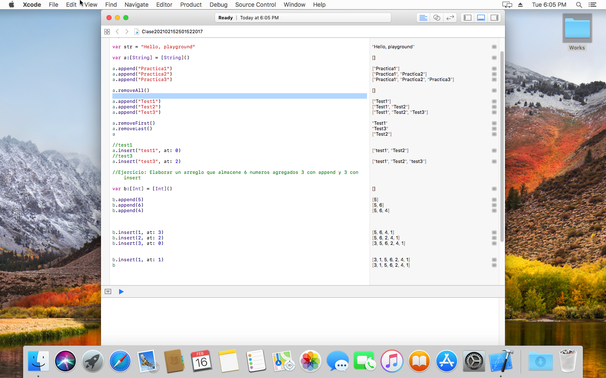

Swift 3 for Absolute Beginners
Swift es un lenguaje construido en el concepto de lenguaje moderno, y como tal, su sintaxis es poco sintáctica (es más difícil de leer que un lenguaje más explícito) y está construido sobre la base de una estructura segura. Además, en contra de la mayoría de lenguajes de tipo script, del que hereda gran parte de sus cualidades, Swift está más cerca de la CPU que el propio Objective-C, por lo que todo lo que se programe en este nuevo lenguaje, irá mejor y más fluido. De ahí el término: potente.
Capitulo 1
Pensar como un desarrollador
El desarrollo de software implica escribir un programa informático y luego hacer que un ordenador ejecute ese programa. Un programa informático es el conjunto de instrucciones que desea que realice el equipo. Antes de comenzar a escribir un programa informático, es útil enumerar los pasos que desea que el programa realice en el orden en que desea que se realicen. Este proceso paso a paso se denomina algoritmo.
Si desea escribir un programa de computadora para brindar por un pedazo de pan, primero escribiría un algoritmo.
El algoritmo podría tener un aspecto similar al siguiente:
- 1. Saca el pan de la bolsa.
- 2. Coloque una rebanada de pan en la tostadora.
- 3. Pulse el botón "toast".
- 4. Espera a que aparezca el brindis.
- 5. Retire la tostada de la tostadora.
A primera vista, este algoritmo parece resolver el problema. Sin embargo, el algoritmo omite muchos detalles y hace muchas suposiciones. Aquí hay unos ejemplos:
- • ¿Qué tipo de tostada quiere el usuario? ¿Quiere el usuario pan blanco, pan de trigo o algún otro tipo de pan?
- • ¿Cómo quiere el usuario que se tueste el pan? ¿Claro u oscuro?
- • ¿Qué quiere el usuario en el pan después de tostarlo: mantequilla, margarina, miel o mermelada de fresa?
- • ¿Este algoritmo funciona para todos los usuarios en sus culturas e idiomas? Algunas culturas pueden tener otra palabra para brindis o no saber qué es brindis.
Ahora, podría estar pensando que esto se está volviendo demasiado detallado para hacer un programa simple de tostadas. A lo largo de los años, el desarrollo de software se ha ganado la reputación de tardar demasiado, de costar demasiado y de no ser lo que el usuario desea. Esta reputación se debe a que los programadores de computadoras a menudo comienzan a escribir sus programas antes de haber pensado realmente en sus algoritmos.
Los ingredientes clave para lograr aplicaciones exitosas son Requerimientos de diseño. Los requisitos de diseño pueden ser formales y detallados o simples como una lista en una hoja de papel. Los requisitos de diseño son importantes porque ayudan al desarrollador a desarrollar lo que la aplicación debe y no debe hacer cuando esté completa. Los requisitos de diseño no deben completarse en el vacío de un programador, sino que deben producirse como resultado de la colaboración entre desarrolladores, usuarios y clientes.
Otro ingrediente clave para el éxito de su aplicación es la interfaz de usuario (UI) diseño. Apple recomienda que dedique más del 50 por ciento de todo el proceso de desarrollo a concentrarse en el diseño de la interfaz de usuario. El diseño se puede hacer con un simple lápiz y papel o con la función de guión gráfico de Xcode para diseñar los elementos de la pantalla. Muchos desarrolladores de software comienzan con el diseño de la interfaz de usuario y, después de diseñar todos los elementos de la pantalla y hacer que muchos usuarios vean las maquetas en papel, escriben los requisitos de diseño a partir de sus diseños de pantalla.
Ejercicios
Responda las siguientes preguntas:
- 1. ¿Por qué es tan importante dedicar tiempo a sus requisitos de usuario?
- R// Son parte fundamental de la programación y son parte de una practica correcta en el diseño de un proyecto
- 2. ¿Cuál es la diferencia entre los requisitos de diseño y un algoritmo?
- R// Los requisitos de diseño son los items que del diseño final de un proyecto y un algoritmo son los pasos a seguir para conseguir el proyecto
- 3. ¿Cuál es la diferencia entre un método y una propiedad?
- R//Los métodos manipulan objetos para lograr qué quieres que haga tu aplicación. La mayoría de los objetos tienen datos que describen esos objetos. Estos datos se definen como propiedades
- 4. ¿Qué es un Bug?
- R// Un bug, se puede referir a dos situaciones. La primera, el programa (llámese Candy Crush o Facebook) no se comporta según las intenciones del programador, de su creador. La segunda, las intenciones del informático no satisfacen las expectativas razonables del usuario.
- 5. ¿Qué es el State?
- R//Son los valores de un objeto, en otras palabras es el estado de un objeto
- 6. Escriba un algoritmo para el funcionamiento de una máquina de refrescos desde el momento en que se inserta una moneda hasta que se dispensa un refresco. Supongamos que el precio de un refresco es de 80 centavos.
- R//
- Seleccione el refresco que desea
- Pulsa el botón “Bebida de 0.80ctvs”
- Esperando a que el mecanismo dispense la bebida
- Recoger el vuelto de la moneda “0.20ctvs”
- Recoger la bebida deseada
- 7. Escriba los requisitos de diseño de una aplicación que ejecutará la máquina de refrescos.
- R//
- Recibir la moneda de cambio
- Detectar la solicitud de bebida
- Entregar la bebida
- Devolver el cambio de la moneda si lo amerita
--------------------------------------------------------------------------------------------------------------------------------------------
Capitulo 2
Touring Xcode
Xcode y Playgrounds hacen que escribir código Swift sea increíblemente simple y divertido. Escriba una línea de código y el resultado aparecerá de inmediato. Si su código se ejecuta por un período de tiempo, como un bucle o una rama, puede ver su progreso en el área de la línea de tiempo. Cuando haya completado su código en Playground, es fácil mover su código a un proyecto de Swift iOS. Con Xcode Playgrounds, puede hacer lo siguiente:
- • Diseñar o modificar un algoritmo, observando los resultados en cada paso del camino
- • Crear nuevas pruebas, verificando que funcionan antes de promocionarlas en su conjunto de pruebas
Ejercicios
Amplíe su playground agregando una línea de código que imprima cualquier texto de su elección.
- Import UIKit
- var str = "Hola Mundo, Bienvenidos al Capitulo 2 "
- var msj = "Imprimiento un mensaje cualquiera!"
- print(str + msj)
--------------------------------------------------------------------------------------------------------------------------------------------
Capitulo 3
Sistemas de numeración utilizados en la programación
Las computadoras trabajan con información de manera diferente que los humanos. Esta sección cubre las diversas formas en que la información es almacenada, contada y manipulada por dispositivos como tu iPhone y iPad.
Tipos de datos
Por lo general, los seres humanos pueden simplemente mirar los datos y el contexto en el que se utilizan para determinar qué tipo de datos es y cómo se utilizarán. Las computadoras necesitan que se les diga cómo hacer esto. Por lo tanto, el programador necesita decirle al ordenador el tipo de datos que se le está dando. Este es un ejemplo: 2 + 2 x 4.
El equipo necesita saber que desea agregar dos números juntos. En este ejemplo, son enteros.
En primer lugar, puede creer que agregar estos números es obvio incluso para el observador más ocasional, y mucho menos para una computadora sofisticada. Sin embargo, es común que los usuarios de aplicaciones iOS almacenen datos como una serie de caracteres, no como un cálculo. Por ejemplo, un mensaje de texto podría decir "Todo el mundo sabe que 2 + 2 x 4."
En este caso, el ejemplo es una serie de caracteres denominados cadena. Un tipo de datos es simplemente la declaración al programa que define los datos que desea almacenar. Una variable se utiliza para almacenar los datos y se declara con un tipo de datos asociado. Todos los datos se almacenan en una variable y la variable tiene que tener un tipo de variable. Por ejemplo, en Swift, las siguientes son declaraciones de variables con sus tipos de datos asociados:
- var x: Int = 10
- var y: Int = 2
- var z: Int = 0
- var submarineName: String = "USS Nevada SSBN-733"
Los tipos de datos no se pueden mezclar entre sí. No puede hacer lo siguiente:
- z = x + submarineName
La combinación de tipos de datos provocará advertencias del compilador o errores del compilador, y la aplicación no se ejecutará.
Ejercicios
- 1. Escribir código dentro de un Swift playground que multiplica dos enteros y muestra el resultado.
- Import UIKit
- var primerNumero = 2
- var segundoNumero = 3
- var totalMulti = primerNumero * segundoNumero
- print(totalMulti)
- 2. Escribir código dentro de un Swift playground que cuadra un flotador. Muestre el flotador resultante.
- Import UIKit
- var primerNumero = 7.8
- var result = pow(primerNumero, 2.0)
- print(result)
- 3. Escribir código dentro de un Swift playground que resta dos flotantes, con el resultado almacenado como un entero. Tenga en cuenta que el redondeo no se produce
- Import UIKit
- var primerNumero = 6.7
- var segundoNumero = 4.3
- var resta = primerNumero - segundoNumero
- var enterto = Int(resta)
- print(entero)
--------------------------------------------------------------------------------------------------------------------------------------------
Ejemplos de Clases
Clase 03/02/2021

Clase 10/02/2021


Clase 13/02/2021


Clase 15/02/2021

About

Portafolio dedicado a Swift 3 for Absolute Beginners